核心视觉特征：松散黑线、怪萌人物、少量点色、白底、日常吐槽与尴尬幽默；人物轮廓优先于细节堆砌，脸型、头身比例与手脚形状要形成清楚而独立的视觉语言；表情偏冷脸、尴尬或突然夸张，姿态要有明确喜剧节奏，避免统一的可爱微笑。 主题：[请填写]
COLLECTION A · 001—035
国际社论漫画 / 幽默手绘
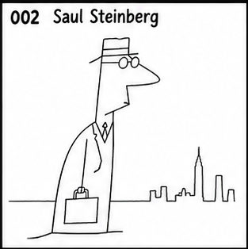
核心视觉特征：极简线描、连续线、概念隐喻、人与空间一体化、智性幽默。 主题：[请填写]
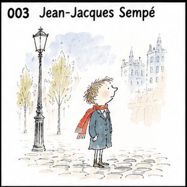
核心视觉特征：极细钢笔线、小人物大空间、大量留白、温柔法式都市幽默。 主题：[请填写]
核心视觉特征：故意笨拙的极简线条、比例失衡、几笔成形、冷幽默。 主题：[请填写]
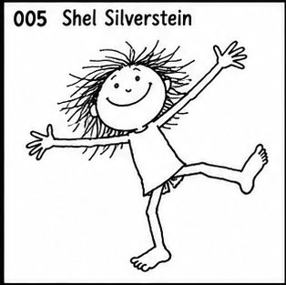
核心视觉特征：极简黑线、儿童式自由造型、荒诞动作、低细节。 主题：[请填写]
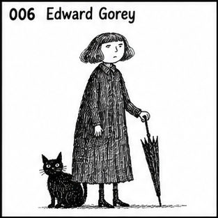
核心视觉特征：黑白钢笔、密集排线、维多利亚气息、古怪冷峻黑色幽默。 主题：[请填写]
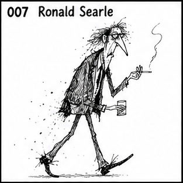
核心视觉特征：狂躁钢笔、断裂墨线、细长人体、尖锐夸张、动态极强。 主题：[请填写]
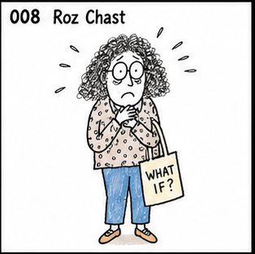
核心视觉特征：神经质手绘、歪斜线条、手写文字、都市焦虑式喜剧；人物轮廓优先于细节堆砌，脸型、头身比例与手脚形状要形成清楚而独立的视觉语言；表情与肢体动作要服从该风格的人格机制，避免回落为统一的标准Q版表情。 主题：[请填写]
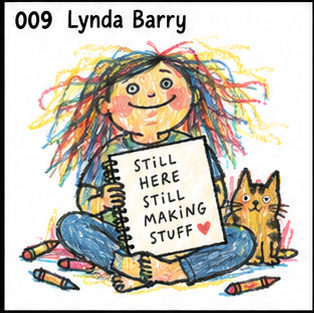
核心视觉特征：粗糙手帐、Zine 感、手写字、原始情绪、反精致；人物轮廓优先于细节堆砌，脸型、头身比例与手脚形状要形成清楚而独立的视觉语言；保留纸纹、颗粒、套印或手工媒介的不完美，强化独立出版物的触感。 主题：[请填写]
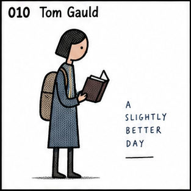
核心视觉特征：极小几何人物、极简场景、文学/科技梗、冷面幽默；脸部与服装主动做减法，依靠清楚轮廓、眼口和少量关键形状建立人物辨识度；表情偏冷脸、尴尬或突然夸张，姿态要有明确喜剧节奏，避免统一的可爱微笑。 主题：[请填写]
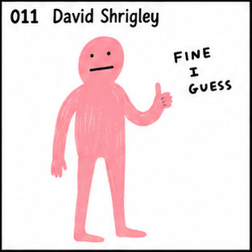
核心视觉特征：故意画坏、粗糙黑线、幼稚造型、荒诞文字、强 meme 感；人物轮廓优先于细节堆砌，脸型、头身比例与手脚形状要形成清楚而独立的视觉语言；表情偏冷脸、尴尬或突然夸张，姿态要有明确喜剧节奏，避免统一的可爱微笑。 主题：[请填写]
核心视觉特征：极简概念设计、物体重解释、视觉双关、脑洞型构图；脸部与服装主动做减法，依靠清楚轮廓、眼口和少量关键形状建立人物辨识度；表情与肢体动作要服从该风格的人格机制，避免回落为统一的标准Q版表情。 主题：[请填写]
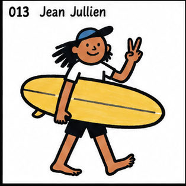
核心视觉特征：粗黑轮廓、扁平色块、现代人物、互联网生活讽刺；以醒目外轮廓和大形组织人物，五官少而有力，动作通过肩胯与手脚方向直接传达；表情偏冷脸、尴尬或突然夸张，姿态要有明确喜剧节奏，避免统一的可爱微笑。 主题：[请填写]
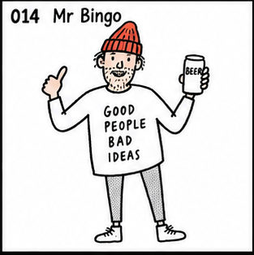
核心视觉特征：随手钢笔、手写字、恶趣味、英式反鸡汤幽默；保留明显手绘笔压、停顿与轻微不齐整感，让轮廓产生真实纸上绘制的节奏；表情偏冷脸、尴尬或突然夸张，姿态要有明确喜剧节奏，避免统一的可爱微笑。 主题：[请填写]
核心视觉特征：极简人物线稿、人与关系、柔和色块、生活型社论；脸部与服装主动做减法，依靠清楚轮廓、眼口和少量关键形状建立人物辨识度；配色控制在柔和低刺激色域，用少量点色区分层次，背景保持轻和干净。 主题：[请填写]
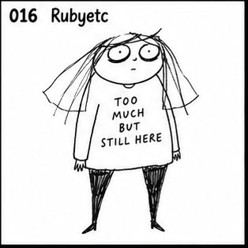
核心视觉特征：粗糙黑线、极简人体、心理情绪、自嘲式互联网漫画；脸部与服装主动做减法，依靠清楚轮廓、眼口和少量关键形状建立人物辨识度；保留纸纹、颗粒、套印或手工媒介的不完美，强化独立出版物的触感。 主题：[请填写]
核心视觉特征：黑白简线、圆眼反应表情、松散黑发、日常衣着；人物常与小动物或生活物件并置，依靠简单轮廓和大面积留白塑造轻松的生活漫画感。 主题：[请填写]
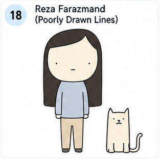
核心视觉特征：极简圆头人物、面无表情、简单动物、灰蓝与米色小色块；人物和动物以干净轮廓置于白底中，靠冷淡姿态和微小关系制造荒诞幽默。 主题：[请填写]
核心视觉特征：粗黑线、夸张圆眼、张大嘴、头发和四肢大幅甩动；人物常与动物同框，以强烈动作、巨大表情和少量灰黑色块形成爆发式网络漫画效果。 主题：[请填写]
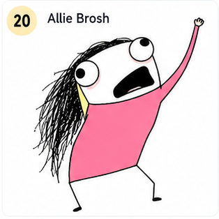
核心视觉特征：粗糙鼠绘感、黑色乱发、极端大眼大嘴、粉色大色块、单人失控动作；保留低保真数字涂画的不规整轮廓和直接粗粝的互联网幽默。 主题：[请填写]
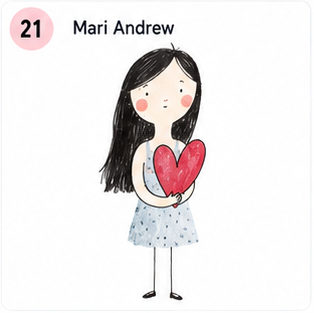
核心视觉特征：极简女性人物、细黑线、细长四肢、柔和水彩点染；以红色心形等单一物件承载生活情绪，画面保持白底、留白和轻微纸张质感。 主题：[请填写]
核心视觉特征：日常女性人物、蓬松手绘线稿、低饱和外套与围巾、旁边的小鸟；姿态自然站立，服装和动物用清楚色块区分，整体保留生活速写的轻松感。 主题：[请填写]
核心视觉特征：黑色简线、黑色长发女性、坐姿、白上衣与蓝色牛仔裤；以少量暖色腮红和红色鞋带点亮画面，背景保持干净，气质亲密而松弛。 主题：[请填写]
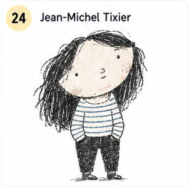
核心视觉特征：夸张大头、松散黑色短线、冷面人物、横条纹上衣、灰黑与浅色块；人物比例故意不协调，依靠简化脸部和粗略纹理形成时尚而疏离的幽默感。 主题：[请填写]
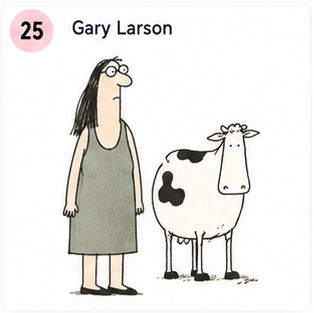
核心视觉特征：单格漫画、极简黑线、细长人物与动物并置、荒诞社会情境；人物和动物以克制的姿态和少量灰绿色块呈现一本正经的反逻辑幽默。 主题：[请填写]
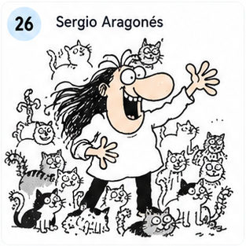
核心视觉特征：密集小动物和小人物、粗黑线、夸张鼻子与张嘴大笑、四肢向外伸展；画面充满无字肢体喜剧和拥挤的动作信息。 主题：[请填写]
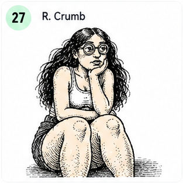
核心视觉特征：黑色密排线、粗重轮廓、坐姿人物、夸张而不修饰的人体比例；皮肤、头发和衣物依靠密集交叉排线塑造，带有地下漫画的粗粝与怪诞。 主题：[请填写]
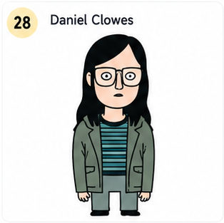
核心视觉特征：黑色齐肩直发、方形眼镜、条纹上衣与绿色外套、冷静平涂色块；人物正面站立、表情疏离，画面具有复古美式成人漫画的克制感。 主题：[请填写]
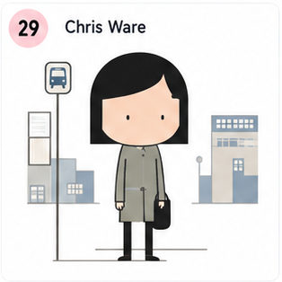
核心视觉特征：几何精密线条、孤立小人物、公交站牌与城市方块、信息图式留白；人物和环境由规整矩形与细线组成，色彩克制，叙事像一张安静的城市图表。 主题：[请填写]
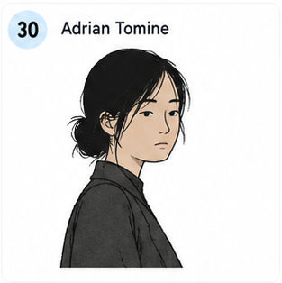
核心视觉特征：清晰细线、年轻亚洲女性半身像、深色外套、低饱和肤色与黑发；人物侧身回望，表情安静克制，背景留白，呈现都市观察和轻微疏离。 主题：[请填写]
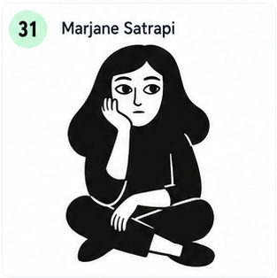
核心视觉特征：黑白高对比、粗黑剪影、盘坐女性、简化五官、大片纯黑服装；人物姿态直接而静止，依靠白色脸部和黑色轮廓形成克制的回忆录漫画感。 主题：[请填写]
核心视觉特征：松散法式墨线、蓬乱卷发、大眼女性、黑猫、随意坐姿；线条保留手绘停顿和轻微不齐整，配合少量暖色块，形成即兴、俏皮而略带怪诞的画面。 主题：[请填写]
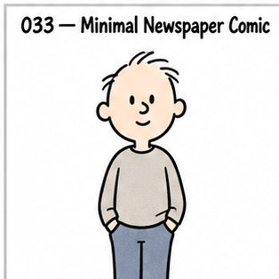
核心视觉特征：极简报纸漫画线、圆头小人物、低动作高人格、细微表情。 主题：[请填写]
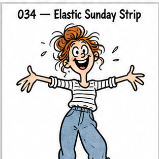
核心视觉特征：松散弹性墨线、夸张儿童表情、强肢体动作、少量透明水彩；保留明显手绘笔压、停顿与轻微不齐整感，让轮廓产生真实纸上绘制的节奏；上色保留透明叠染、柔软边缘和纸纹，允许轻微颜色不均与留白。 主题：[请填写]
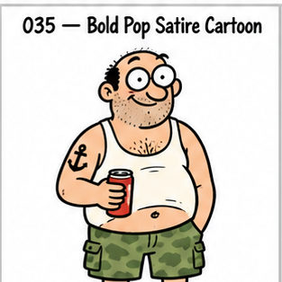
核心视觉特征：粗黑轮廓、圆凸大眼、扁平人物、极少阴影、成人讽刺；以醒目外轮廓和大形组织人物，五官少而有力，动作通过肩胯与手脚方向直接传达；配色使用少量高纯度撞色和平涂，让人物剪影和服装保持强图形对比。 主题：[请填写]
COLLECTION B · 036—054
国际绘本 / 叙事型手绘
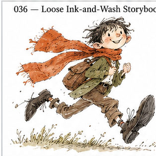
核心视觉特征：抖动墨线、松散水彩、四肢夸张、动作极灵、快速速写感。 主题：[请填写]
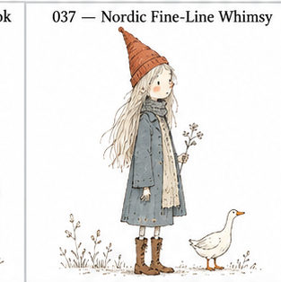
核心视觉特征：北欧墨线、细密但轻盈、奇异人物、温柔孤独、大留白。 主题：[请填写]
核心视觉特征：拟人动物社会、职业角色、圆润轮廓、丰富生活动作。 主题：[请填写]
核心视觉特征：古典细线、水彩旧书感、安静角色、温暖生活气息。 主题：[请填写]
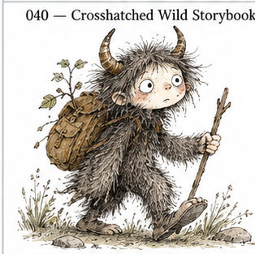
核心视觉特征：细线排线、怪物造型、童话荒诞、毛茸茸纹理。 主题：[请填写]
核心视觉特征：极端比例、弯曲结构、怪生物、流动线条、疯狂想象。 主题：[请填写]
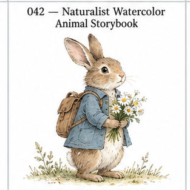
核心视觉特征：精细水彩、自然主义动物、古典绘本、柔和纸张感。 主题：[请填写]
核心视觉特征：钢笔速写、淡水彩、古典角色、优雅而轻松。 主题：[请填写]
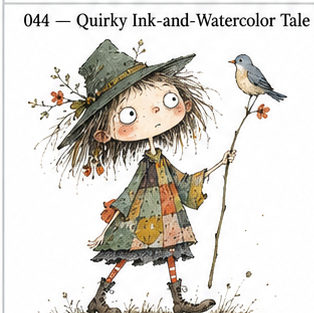
核心视觉特征：怪趣人物、墨线、水彩、不规则比例、现代童话；保留明显手绘笔压、停顿与轻微不齐整感，让轮廓产生真实纸上绘制的节奏；上色保留透明叠染、柔软边缘和纸纹，允许轻微颜色不均与留白。 主题：[请填写]
核心视觉特征：极简人物、手写感、松散涂色、诗意荒诞；脸部与服装主动做减法，依靠清楚轮廓、眼口和少量关键形状建立人物辨识度；表情偏冷脸、尴尬或突然夸张，姿态要有明确喜剧节奏，避免统一的可爱微笑。 主题：[请填写]
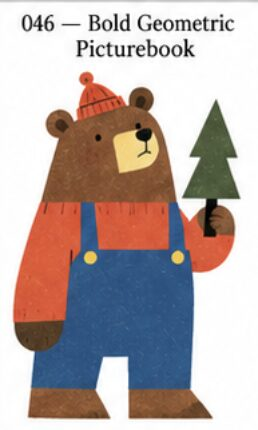
核心视觉特征：几何块面、极简轮廓、高饱和色、强剪影；脸部与服装主动做减法，依靠清楚轮廓、眼口和少量关键形状建立人物辨识度；配色使用少量高纯度撞色和平涂，让人物剪影和服装保持强图形对比。 主题：[请填写]
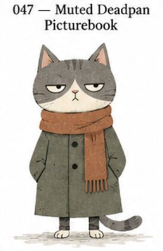
核心视觉特征：极简动物、半闭眼、低饱和、Deadpan 冷幽默；脸部与服装主动做减法，依靠清楚轮廓、眼口和少量关键形状建立人物辨识度；配色控制在柔和低刺激色域，用少量点色区分层次，背景保持轻和干净。 主题：[请填写]
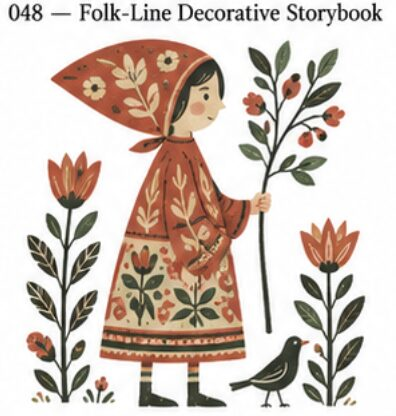
核心视觉特征：民俗线描、复古配色、植物纹样、奇异群像；人物轮廓优先于细节堆砌，脸型、头身比例与手脚形状要形成清楚而独立的视觉语言；表情与肢体动作要服从该风格的人格机制，避免回落为统一的标准Q版表情。 主题：[请填写]
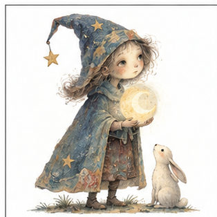
核心视觉特征：柔和手绘笔触、轻微超现实人物、低饱和梦境配色、安静叙事气质；人物轮廓简洁清楚，比例略诗意变形，表情克制偏沉静，留出白底与空间感，避免过于指向单一作者的独特怪脸机制。 主题：[请填写]
核心视觉特征：分层拼贴质感、复古纸张肌理、手工剪贴与印刷颗粒感并存；人物由大形与贴纸般色块构成，造型怪趣但易读，配色温暖克制，强调材料感与旧书气息，避免复现某个固定童书角色。 主题：[请填写]
核心视觉特征：速写式手绘线条、夸张但亲切的人物表演、清楚外轮廓与鲜明性格；脸部结构简化，眉眼嘴主导情绪，动作有动画草图般弹性和节奏，适合做高人格角色，避免过度逼近具体作者角色设计。 主题：[请填写]
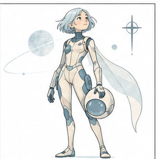
核心视觉特征：干净细线、轻科技感人物、简洁未来服装与梦境般留白；线条清晰克制，配色偏浅淡蓝灰或柔和中性色，人物修长、姿态安静，强调现代科幻插图气质而非某个具体世界观。 主题：[请填写]
核心视觉特征：欧洲清线漫画语言、整洁闭合轮廓、平涂配色、人物可读性极高；造型简洁、动作明确，脸部结构控制在少量特征之内，带轻冒险叙事感，避免直接滑向某个经典固定角色。 主题：[请填写]
核心视觉特征：几何化清线人物、现代主义图形秩序、简洁建筑感服装与姿态；以圆方弧线组织角色，平涂色块干净，表情直接而克制，整体更偏欧洲平面设计人物感，避免过强的单一作者指纹。 主题：[请填写]
COLLECTION C · 055—082
现代平面 / 艺术化人物体系
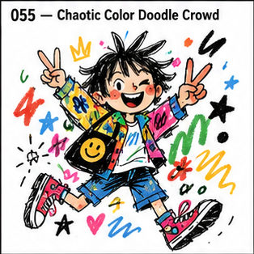
核心视觉特征：即兴彩色 Doodle、怪物人物、粗轮廓、高密度快乐混乱；人物轮廓优先于细节堆砌，脸型、头身比例与手脚形状要形成清楚而独立的视觉语言；表情与肢体动作要服从该风格的人格机制，避免回落为统一的标准Q版表情。 主题：[请填写]
核心视觉特征：卡通嘴眼、杂志涂鸦覆盖、Pop 色彩、朋克恶搞；人物轮廓优先于细节堆砌，脸型、头身比例与手脚形状要形成清楚而独立的视觉语言；配色使用少量高纯度撞色和平涂，让人物剪影和服装保持强图形对比。 主题：[请填写]
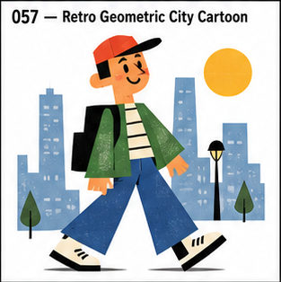
核心视觉特征：几何人物、复古城市、高饱和平涂、70s–80s 商业卡通感；人物以圆、方、弧线等大形构成，五官图标化，比例强调图形辨识而非写实解剖；配色使用少量高纯度撞色和平涂，让人物剪影和服装保持强图形对比。 主题：[请填写]
核心视觉特征：极简几何、大块高饱和色、女性时尚人物；脸部与服装主动做减法，依靠清楚轮廓、眼口和少量关键形状建立人物辨识度；配色使用少量高纯度撞色和平涂，让人物剪影和服装保持强图形对比。 主题：[请填写]
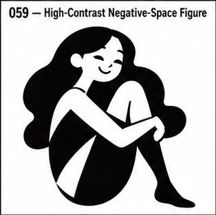
核心视觉特征：极简剪影、正负形、高对比色、强视觉切割；脸部与服装主动做减法，依靠清楚轮廓、眼口和少量关键形状建立人物辨识度；主要依靠黑白关系和大面积留白塑形，表情集中在眼神、眉形与嘴形变化。 主题：[请填写]
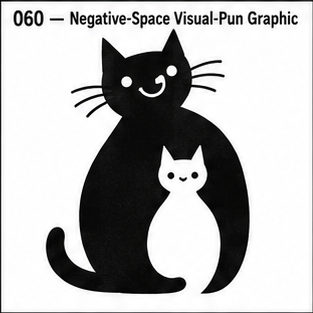
核心视觉特征：负空间、双重图像、极少颜色、视觉双关；人物轮廓优先于细节堆砌，脸型、头身比例与手脚形状要形成清楚而独立的视觉语言；表情与肢体动作要服从该风格的人格机制，避免回落为统一的标准Q版表情。 主题：[请填写]
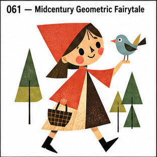
核心视觉特征：几何童话、现代主义色块、夸张比例、明快配色。 主题：[请填写]
核心视觉特征：极端几何化动物与人物、Flat Shape、装饰性强。 主题：[请填写]
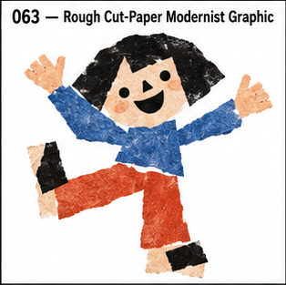
核心视觉特征：剪纸般粗粝几何形、强符号、极少元素。 主题：[请填写]
核心视觉特征：拼贴、玩具式图形、几何人物、现代主义幽默。 主题：[请填写]
核心视觉特征：复古社论、强轮廓、波普色彩、海报化人物。 主题：[请填写]
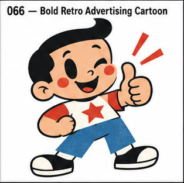
核心视觉特征：粗线、复古广告、怪趣人物、Push Pin 气质。 主题：[请填写]
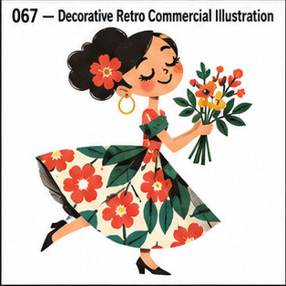
核心视觉特征：复古商业插画、装饰线条、怪人物、印刷感。 主题：[请填写]
核心视觉特征：剪纸色块、自由人体、极简轮廓、大面积纯色。 主题：[请填写]
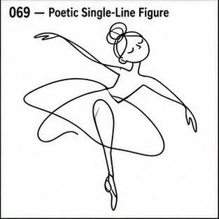
核心视觉特征：单线脸、不断笔、极少细节、优雅诗性。 主题：[请填写]
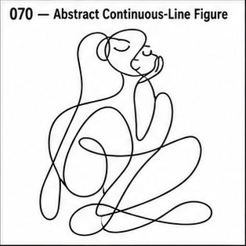
核心视觉特征：连续线、抽象人体、几何变形、符号化。 主题：[请填写]
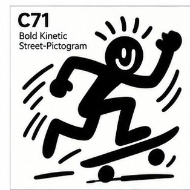
核心视觉特征：粗黑连续轮廓、动态小人、高动作、街头图腾。 主题：[请填写]
核心视觉特征：原始涂鸦、皇冠与符号、文字碎片、爆裂能量。 主题：[请填写]
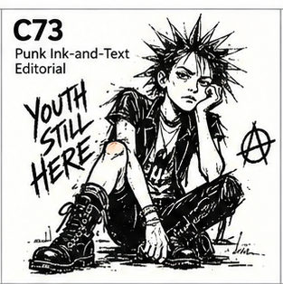
核心视觉特征：黑墨速写、朋克线稿、文字并置、粗粝社论；保留明显手绘笔压、停顿与轻微不齐整感，让轮廓产生真实纸上绘制的节奏；表情与肢体动作要服从该风格的人格机制，避免回落为统一的标准Q版表情。 主题：[请填写]
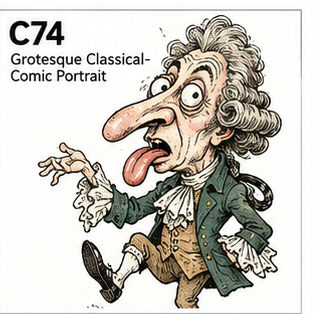
核心视觉特征：扭曲五官、怪表情、古典人物与漫画混合；人物轮廓优先于细节堆砌，脸型、头身比例与手脚形状要形成清楚而独立的视觉语言；表情与肢体动作要服从该风格的人格机制，避免回落为统一的标准Q版表情。 主题：[请填写]
核心视觉特征：海报式人物、简化轮廓、平面色块、都市生活。 主题：[请填写]
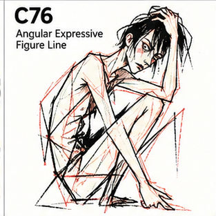
核心视觉特征：断裂敏感线条、细瘦人体、扭曲姿态、强情绪。 主题：[请填写]
核心视觉特征：Art Brut、粗糙线、人形符号、儿童式反精致。 主题：[请填写]
核心视觉特征：细线几何、童真符号、诗意色块、抽象人物。 主题：[请填写]
核心视觉特征：生物符号、原始线条、红蓝黄点色、自由空间。 主题：[请填写]
核心视觉特征：单线人物、流畅连续线、极简动态。 主题：[请填写]
核心视觉特征：电影感极简色块、颗粒、强光影、远近层次；脸部与服装主动做减法，依靠清楚轮廓、眼口和少量关键形状建立人物辨识度；保留纸纹、颗粒、套印或手工媒介的不完美，强化独立出版物的触感。 主题：[请填写]
核心视觉特征：复古丝网印刷、厚重几何色层、旧书颗粒；人物以圆、方、弧线等大形构成，五官图标化，比例强调图形辨识而非写实解剖；保留纸纹、颗粒、套印或手工媒介的不完美，强化独立出版物的触感。 主题：[请填写]
COLLECTION D · 083—123
日本作者 / 当代插画体系
核心视觉特征：流动墨线、东方笔意、强动作、现代 Editorial；保留明显手绘笔压、停顿与轻微不齐整感，让轮廓产生真实纸上绘制的节奏；线条带书写性与留白意识，衣褶、发丝和姿势顺势流动，东方感来自形与节奏。 主题：[请填写]
核心视觉特征：安静平面人物、低饱和、留白、日系现代社论；人物轮廓优先于细节堆砌，脸型、头身比例与手脚形状要形成清楚而独立的视觉语言；配色控制在柔和低刺激色域，用少量点色区分层次，背景保持轻和干净。 主题：[请填写]
核心视觉特征：极简黑线、时尚人物、无阴影、大白底；脸部与服装主动做减法，依靠清楚轮廓、眼口和少量关键形状建立人物辨识度；人物姿态松弛自然，服装靠清楚剪影体现时尚感，避免模板化甜美脸。 主题：[请填写]
核心视觉特征：黑白线稿、极简脸、无表情、清冷日常；脸部与服装主动做减法，依靠清楚轮廓、眼口和少量关键形状建立人物辨识度；主要依靠黑白关系和大面积留白塑形，表情集中在眼神、眉形与嘴形变化。 主题：[请填写]
核心视觉特征：昭和商业插画、圆润人物、明快复古色。 主题：[请填写]
核心视觉特征：极轻透明水彩、柔和人物、湿边晕染、大量白纸。 主题：[请填写]
核心视觉特征：昭和家庭漫画、简洁线条、日常观察。 主题：[请填写]
核心视觉特征：朴拙漫画线、民俗怪谈、妖怪造型、黑白纹理。 主题：[请填写]
核心视觉特征：圆润漫画轮廓、清楚表演、大眼、强动作可读性。 主题：[请填写]
核心视觉特征：大头冷脸、叛逆眼神、极少背景、怪可爱；人物轮廓优先于细节堆砌，脸型、头身比例与手脚形状要形成清楚而独立的视觉语言；表情偏冷脸、尴尬或突然夸张，姿态要有明确喜剧节奏，避免统一的可爱微笑。 主题：[请填写]
核心视觉特征：清线都市少女、80s 时尚、大块留白、Pop 色；人物轮廓优先于细节堆砌，脸型、头身比例与手脚形状要形成清楚而独立的视觉语言；配色使用少量高纯度撞色和平涂，让人物剪影和服装保持强图形对比。 主题：[请填写]
核心视觉特征：精密钢笔、奇异动植物、古典怪萌、细节密集；保留明显手绘笔压、停顿与轻微不齐整感，让轮廓产生真实纸上绘制的节奏；表情与肢体动作要服从该风格的人格机制，避免回落为统一的标准Q版表情。 主题：[请填写]
核心视觉特征：女孩穿搭速写、手绘服装、Instagram 日记感；保留明显手绘笔压、停顿与轻微不齐整感，让轮廓产生真实纸上绘制的节奏；人物姿态松弛自然，服装靠清楚剪影体现时尚感，避免模板化甜美脸。 主题：[请填写]
核心视觉特征：脱力人物、松散线条、生活吐槽；人物轮廓优先于细节堆砌，脸型、头身比例与手脚形状要形成清楚而独立的视觉语言；表情偏冷脸、尴尬或突然夸张，姿态要有明确喜剧节奏，避免统一的可爱微笑。 主题：[请填写]
核心视觉特征：ゆるシュール、极简人物、反逻辑日常；脸部与服装主动做减法，依靠清楚轮廓、眼口和少量关键形状建立人物辨识度；表情与肢体动作要服从该风格的人格机制，避免回落为统一的标准Q版表情。 主题：[请填写]
核心视觉特征：手帐式小人物、小物罗列、文字注记、生活记录；人物轮廓优先于细节堆砌，脸型、头身比例与手脚形状要形成清楚而独立的视觉语言；表情与肢体动作要服从该风格的人格机制，避免回落为统一的标准Q版表情。 主题：[请填写]
核心视觉特征：可爱 Essay Manga、生活与职场小剧场；人物轮廓优先于细节堆砌，脸型、头身比例与手脚形状要形成清楚而独立的视觉语言；表情与肢体动作要服从该风格的人格机制，避免回落为统一的标准Q版表情。 主题：[请填写]
核心视觉特征：粗糙搞笑漫画、强 reaction、夸张情绪；人物轮廓优先于细节堆砌，脸型、头身比例与手脚形状要形成清楚而独立的视觉语言；表情偏冷脸、尴尬或突然夸张，姿态要有明确喜剧节奏，避免统一的可爱微笑。 主题：[请填写]
核心视觉特征：清秀线稿、年轻女性、轻宅生活感；人物轮廓优先于细节堆砌，脸型、头身比例与手脚形状要形成清楚而独立的视觉语言；人物姿态松弛自然，服装靠清楚剪影体现时尚感，避免模板化甜美脸。 主题：[请填写]
核心视觉特征：女生日常博客漫画、简单可亲、生活感；人物轮廓优先于细节堆砌，脸型、头身比例与手脚形状要形成清楚而独立的视觉语言；人物姿态松弛自然，服装靠清楚剪影体现时尚感，避免模板化甜美脸。 主题：[请填写]
核心视觉特征：荒诞短漫画、冷笑话、极简小人物；脸部与服装主动做减法，依靠清楚轮廓、眼口和少量关键形状建立人物辨识度；表情偏冷脸、尴尬或突然夸张，姿态要有明确喜剧节奏，避免统一的可爱微笑。 主题：[请填写]
核心视觉特征：温暖线条、轻怪角色、小众生活气质；人物轮廓优先于细节堆砌，脸型、头身比例与手脚形状要形成清楚而独立的视觉语言；表情与肢体动作要服从该风格的人格机制，避免回落为统一的标准Q版表情。 主题：[请填写]
核心视觉特征：家庭 Essay、快速线稿、日常观察；人物轮廓优先于细节堆砌，脸型、头身比例与手脚形状要形成清楚而独立的视觉语言；表情与肢体动作要服从该风格的人格机制，避免回落为统一的标准Q版表情。 主题：[请填写]
核心视觉特征：极简古怪人物、图形化、短动画式节奏；脸部与服装主动做减法，依靠清楚轮廓、眼口和少量关键形状建立人物辨识度；表情与肢体动作要服从该风格的人格机制，避免回落为统一的标准Q版表情。 主题：[请填写]
核心视觉特征：极少线条、纤细女孩、优雅留白；线条轻细并保留呼吸感，人物比例偏修长，眉眼与嘴角的小变化承担主要表情；人物姿态松弛自然，服装靠清楚剪影体现时尚感，避免模板化甜美脸。 主题：[请填写]
核心视觉特征：纤细人物线稿、女性情绪、长线条发丝；线条轻细并保留呼吸感，人物比例偏修长，眉眼与嘴角的小变化承担主要表情；人物姿态松弛自然，服装靠清楚剪影体现时尚感，避免模板化甜美脸。 主题：[请填写]
核心视觉特征：简化人物、Pop Culture、年轻轻时尚；脸部与服装主动做减法，依靠清楚轮廓、眼口和少量关键形状建立人物辨识度；配色使用少量高纯度撞色和平涂，让人物剪影和服装保持强图形对比。 主题：[请填写]
核心视觉特征：现代女性线稿、编辑插画、清爽人物；人物轮廓优先于细节堆砌，脸型、头身比例与手脚形状要形成清楚而独立的视觉语言；人物姿态松弛自然，服装靠清楚剪影体现时尚感，避免模板化甜美脸。 主题：[请填写]
核心视觉特征：细线 + 淡水彩、生活方式、日系杂志感；线条轻细并保留呼吸感，人物比例偏修长，眉眼与嘴角的小变化承担主要表情；上色保留透明叠染、柔软边缘和纸纹，允许轻微颜色不均与留白。 主题：[请填写]
核心视觉特征：极简女生日常、细线、低干扰构图；脸部与服装主动做减法，依靠清楚轮廓、眼口和少量关键形状建立人物辨识度；人物姿态松弛自然，服装靠清楚剪影体现时尚感，避免模板化甜美脸。 主题：[请填写]
核心视觉特征：简线人物、透明水彩、干净女性杂志感；人物轮廓优先于细节堆砌，脸型、头身比例与手脚形状要形成清楚而独立的视觉语言；上色保留透明叠染、柔软边缘和纸纹，允许轻微颜色不均与留白。 主题：[请填写]
核心视觉特征：彩色马克笔、奇想小物、轻童话人物；以醒目外轮廓和大形组织人物，五官少而有力，动作通过肩胯与手脚方向直接传达；表情与肢体动作要服从该风格的人格机制，避免回落为统一的标准Q版表情。 主题：[请填写]
核心视觉特征：女孩、奇怪姿态、广告 Pop、松弛幽默；人物轮廓优先于细节堆砌，脸型、头身比例与手脚形状要形成清楚而独立的视觉语言；配色使用少量高纯度撞色和平涂，让人物剪影和服装保持强图形对比。 主题：[请填写]
核心视觉特征：青春情绪、透明色、MV 感、线条流动；人物轮廓优先于细节堆砌，脸型、头身比例与手脚形状要形成清楚而独立的视觉语言；上色保留透明叠染、柔软边缘和纸纹，允许轻微颜色不均与留白。 主题：[请填写]
核心视觉特征：温暖人物、轻线稿、生活杂志氛围；人物轮廓优先于细节堆砌，脸型、头身比例与手脚形状要形成清楚而独立的视觉语言；保留纸纹、颗粒、套印或手工媒介的不完美，强化独立出版物的触感。 主题：[请填写]
核心视觉特征：柔软人物、共感型短漫画、社交媒体情绪；人物轮廓优先于细节堆砌，脸型、头身比例与手脚形状要形成清楚而独立的视觉语言；配色控制在柔和低刺激色域，用少量点色区分层次，背景保持轻和干净。 主题：[请填写]
核心视觉特征：潮流女孩、高饱和、Z 世代、Graphic Fashion；人物轮廓优先于细节堆砌，脸型、头身比例与手脚形状要形成清楚而独立的视觉语言；配色使用少量高纯度撞色和平涂，让人物剪影和服装保持强图形对比。 主题：[请填写]
核心视觉特征：柔和幻想、轻动画感、梦境人物；人物轮廓优先于细节堆砌，脸型、头身比例与手脚形状要形成清楚而独立的视觉语言；配色控制在柔和低刺激色域，用少量点色区分层次，背景保持轻和干净。 主题：[请填写]
核心视觉特征：Pastel Girly、梦幻、Yami-kawaii、低对比；人物轮廓优先于细节堆砌，脸型、头身比例与手脚形状要形成清楚而独立的视觉语言；人物姿态松弛自然，服装靠清楚剪影体现时尚感，避免模板化甜美脸。 主题：[请填写]
核心视觉特征：东京街头、图形化女孩、年轻潮流；人物轮廓优先于细节堆砌，脸型、头身比例与手脚形状要形成清楚而独立的视觉语言；人物姿态松弛自然，服装靠清楚剪影体现时尚感，避免模板化甜美脸。 主题：[请填写]
核心视觉特征：强配色、神秘女孩、Fashion × Character；人物轮廓优先于细节堆砌，脸型、头身比例与手脚形状要形成清楚而独立的视觉语言；人物姿态松弛自然，服装靠清楚剪影体现时尚感，避免模板化甜美脸。 主题：[请填写]
COLLECTION E · 124—154
中国作者 / 当代插画体系
核心视觉特征：温柔手绘、人与自然、植物动物、梦境色彩；人物轮廓优先于细节堆砌，脸型、头身比例与手脚形状要形成清楚而独立的视觉语言；表情与肢体动作要服从该风格的人格机制，避免回落为统一的标准Q版表情。 主题：[请填写]
核心视觉特征：黑白极简、视觉双关、几笔成梗、无对白冷幽默；脸部与服装主动做减法，依靠清楚轮廓、眼口和少量关键形状建立人物辨识度；主要依靠黑白关系和大面积留白塑形，表情集中在眼神、眉形与嘴形变化。 主题：[请填写]
核心视觉特征：修长人物、无脸或弱五官、新中式、古典生活；脸部与服装主动做减法，依靠清楚轮廓、眼口和少量关键形状建立人物辨识度；线条带书写性与留白意识，衣褶、发丝和姿势顺势流动，东方感来自形与节奏。 主题：[请填写]
核心视觉特征：高密度东方构图、丰富线条、奇幻 Editorial；人物轮廓优先于细节堆砌，脸型、头身比例与手脚形状要形成清楚而独立的视觉语言；线条带书写性与留白意识，衣褶、发丝和姿势顺势流动，东方感来自形与节奏。 主题：[请填写]
核心视觉特征：柔和水彩、季节与旅行、自然、治愈留白；人物轮廓优先于细节堆砌，脸型、头身比例与手脚形状要形成清楚而独立的视觉语言；上色保留透明叠染、柔软边缘和纸纹，允许轻微颜色不均与留白。 主题：[请填写]
核心视觉特征：蓝橙撞色、颗粒色块、中国现代社论；人物轮廓优先于细节堆砌，脸型、头身比例与手脚形状要形成清楚而独立的视觉语言；线条带书写性与留白意识，衣褶、发丝和姿势顺势流动，东方感来自形与节奏。 主题：[请填写]
核心视觉特征：强色彩、电影感场景、故事性人物；人物轮廓优先于细节堆砌，脸型、头身比例与手脚形状要形成清楚而独立的视觉语言；表情与肢体动作要服从该风格的人格机制，避免回落为统一的标准Q版表情。 主题：[请填写]
核心视觉特征：新国风、流畅线条、黄橙蓝绿、传统元素现代化；人物以圆、方、弧线等大形构成，五官图标化，比例强调图形辨识而非写实解剖；线条带书写性与留白意识，衣褶、发丝和姿势顺势流动，东方感来自形与节奏。 主题：[请填写]
核心视觉特征：国潮商业插画、人物 + 建筑 + 装饰纹样；人物轮廓优先于细节堆砌，脸型、头身比例与手脚形状要形成清楚而独立的视觉语言；表情与肢体动作要服从该风格的人格机制，避免回落为统一的标准Q版表情。 主题：[请填写]
核心视觉特征：飘逸人物、东方幻想、蓝绿橙红、装饰性强；人物轮廓优先于细节堆砌，脸型、头身比例与手脚形状要形成清楚而独立的视觉语言；线条带书写性与留白意识，衣褶、发丝和姿势顺势流动，东方感来自形与节奏。 主题：[请填写]
核心视觉特征：柔和水彩、中国元素、朦胧光线；人物轮廓优先于细节堆砌，脸型、头身比例与手脚形状要形成清楚而独立的视觉语言；上色保留透明叠染、柔软边缘和纸纹，允许轻微颜色不均与留白。 主题：[请填写]
核心视觉特征：传统文化现代编辑化、干净构图、当代中国气质；人物轮廓优先于细节堆砌，脸型、头身比例与手脚形状要形成清楚而独立的视觉语言；线条带书写性与留白意识，衣褶、发丝和姿势顺势流动，东方感来自形与节奏。 主题：[请填写]
核心视觉特征：水墨人物、古风衣袂、潇洒笔触、大面积留白；保留明显手绘笔压、停顿与轻微不齐整感，让轮廓产生真实纸上绘制的节奏；上色保留透明叠染、柔软边缘和纸纹，允许轻微颜色不均与留白。 主题：[请填写]
核心视觉特征：野生墨线、水墨怪人、东方妖异、极强作者手感；保留明显手绘笔压、停顿与轻微不齐整感，让轮廓产生真实纸上绘制的节奏；线条带书写性与留白意识，衣褶、发丝和姿势顺势流动，东方感来自形与节奏。 主题：[请填写]
核心视觉特征：清雅水墨、古风人物、柔和情绪；保留明显手绘笔压、停顿与轻微不齐整感，让轮廓产生真实纸上绘制的节奏；配色控制在柔和低刺激色域，用少量点色区分层次，背景保持轻和干净。 主题：[请填写]
核心视觉特征：精致手绘线稿、东方人物、清雅漫画感；线条轻细并保留呼吸感，人物比例偏修长，眉眼与嘴角的小变化承担主要表情；线条带书写性与留白意识，衣褶、发丝和姿势顺势流动，东方感来自形与节奏。 主题：[请填写]
核心视觉特征：新国风人物、东方奇幻、现代角色设计；人物轮廓优先于细节堆砌，脸型、头身比例与手脚形状要形成清楚而独立的视觉语言；线条带书写性与留白意识，衣褶、发丝和姿势顺势流动，东方感来自形与节奏。 主题：[请填写]
核心视觉特征：清雅漫画线稿、古风青年、细腻叙事；人物轮廓优先于细节堆砌，脸型、头身比例与手脚形状要形成清楚而独立的视觉语言；线条带书写性与留白意识，衣褶、发丝和姿势顺势流动，东方感来自形与节奏。 主题：[请填写]
核心视觉特征：华丽人物、暗黑幻想、装饰细节、唯美系；人物轮廓优先于细节堆砌，脸型、头身比例与手脚形状要形成清楚而独立的视觉语言；表情与肢体动作要服从该风格的人格机制，避免回落为统一的标准Q版表情。 主题：[请填写]
核心视觉特征：山海经异兽、传统笔意、现代怪物设计；保留明显手绘笔压、停顿与轻微不齐整感，让轮廓产生真实纸上绘制的节奏；表情与肢体动作要服从该风格的人格机制，避免回落为统一的标准Q版表情。 主题：[请填写]
核心视觉特征：蓝灰梦境、孤独人物、绘本叙事；人物轮廓优先于细节堆砌，脸型、头身比例与手脚形状要形成清楚而独立的视觉语言；表情与肢体动作要服从该风格的人格机制，避免回落为统一的标准Q版表情。 主题：[请填写]
核心视觉特征：女生生活漫画、夸张表情、网络吐槽；人物轮廓优先于细节堆砌，脸型、头身比例与手脚形状要形成清楚而独立的视觉语言；表情偏冷脸、尴尬或突然夸张，姿态要有明确喜剧节奏，避免统一的可爱微笑。 主题：[请填写]
核心视觉特征：极简青年日常、社交情绪、轻漫画；脸部与服装主动做减法，依靠清楚轮廓、眼口和少量关键形状建立人物辨识度；表情与肢体动作要服从该风格的人格机制，避免回落为统一的标准Q版表情。 主题：[请填写]
核心视觉特征：彩色手绘、诗意都市、童话超现实、孤独感；人物轮廓优先于细节堆砌，脸型、头身比例与手脚形状要形成清楚而独立的视觉语言；表情与肢体动作要服从该风格的人格机制，避免回落为统一的标准Q版表情。 主题：[请填写]
核心视觉特征：极简成人漫画、都市男女、关系讽刺；脸部与服装主动做减法，依靠清楚轮廓、眼口和少量关键形状建立人物辨识度；表情偏冷脸、尴尬或突然夸张，姿态要有明确喜剧节奏，避免统一的可爱微笑。 主题：[请填写]
核心视觉特征：东方女性漫画、细腻线条、古典氛围；线条轻细并保留呼吸感，人物比例偏修长，眉眼与嘴角的小变化承担主要表情；人物姿态松弛自然，服装靠清楚剪影体现时尚感，避免模板化甜美脸。 主题：[请填写]
核心视觉特征：绘本色彩、梦境、青春情绪、柔和人物；人物轮廓优先于细节堆砌，脸型、头身比例与手脚形状要形成清楚而独立的视觉语言；配色控制在柔和低刺激色域，用少量点色区分层次，背景保持轻和干净。 主题：[请填写]
核心视觉特征：网络少女漫画、清晰情绪、生活叙事；人物轮廓优先于细节堆砌，脸型、头身比例与手脚形状要形成清楚而独立的视觉语言；人物姿态松弛自然，服装靠清楚剪影体现时尚感，避免模板化甜美脸。 主题：[请填写]
核心视觉特征：中文互联网梗漫画、表情强、节奏快；人物轮廓优先于细节堆砌，脸型、头身比例与手脚形状要形成清楚而独立的视觉语言；表情偏冷脸、尴尬或突然夸张，姿态要有明确喜剧节奏，避免统一的可爱微笑。 主题：[请填写]
核心视觉特征：青春手绘、自由线条、城市青年；人物轮廓优先于细节堆砌，脸型、头身比例与手脚形状要形成清楚而独立的视觉语言；表情与肢体动作要服从该风格的人格机制，避免回落为统一的标准Q版表情。 主题：[请填写]
核心视觉特征：当代商业人物、都市/科技、清晰平面语言；人物轮廓优先于细节堆砌，脸型、头身比例与手脚形状要形成清楚而独立的视觉语言；表情与肢体动作要服从该风格的人格机制，避免回落为统一的标准Q版表情。 主题：[请填写]
COLLECTION F · 155—200
通用网感 / 媒介 / 地域手绘
核心视觉特征：随手黑线、少量点色、人物 + 概念、白底。 主题：[请填写]
核心视觉特征：不稳定笔压、断续墨线、快速动作、即兴感。 主题：[请填写]
核心视觉特征：极少线条、视觉隐喻、图形脑洞、留白。 主题：[请填写]
核心视觉特征：黑线、成人场景、冷脸人物、一个情境一个笑点。 主题：[请填写]
核心视觉特征：钢笔速写、细长人物、咖啡馆日常、少量淡彩。 主题：[请填写]
核心视觉特征：极细线、松垮人体、无力表情、社畜/日常梗。 主题：[请填写]
核心视觉特征：小人物、手写字、箭头、贴纸、小图标。 主题：[请填写]
核心视觉特征：细线、低饱和、穿搭、美食、轻生活场景。 主题：[请填写]
核心视觉特征：简单人体、突然夸张表情、短节奏反转。 主题：[请填写]
核心视觉特征：柔软细线、奶油色、年轻人物、Instagram 日常。 主题：[请填写]
核心视觉特征：黑白细线 + 红色点睛、时尚人物、大留白。 主题：[请填写]
核心视觉特征：签字笔、故意不专业、Low-fi、地下刊物感。 主题：[请填写]
核心视觉特征：双色套印、轻微错版、粗颗粒、纸张质感。 主题：[请填写]
核心视觉特征：粗蜡笔、越界填色、颗粒、成人主题 + 儿童画感。 主题：[请填写]
核心视觉特征：铅笔轮廓、轻柔彩铅、纸纹、生活记录。 主题：[请填写]
核心视觉特征：粗细变化巨大、黑色笔刷、强动作、强表情。 主题：[请填写]
核心视觉特征：连续线、极少结构、现代极简、时尚人物。 主题：[请填写]
核心视觉特征：错透视、怪比例、直接色块、朴拙成人幽默。 主题：[请填写]
核心视觉特征：粗黑线、简单大形、歪比例、极强小尺寸辨识度。 主题：[请填写]
核心视觉特征：断裂笔刷、干涩纸纹、成熟抽象人物。 主题：[请填写]
核心视觉特征：黑墨主体 + 单一强调色、极简但醒目。 主题：[请填写]
核心视觉特征：圆珠笔感、小人物、箭头注释、随手草图。 主题：[请填写]
核心视觉特征：人物不演、表情平静、荒谬场景制造笑点。 主题：[请填写]
核心视觉特征：比例别扭、眼神游离、怪但可爱、社恐感。 主题：[请填写]
核心视觉特征：“画得不好但很好看”、粗糙比例、怪趣成人感。 主题：[请填写]
核心视觉特征：昭和杂志人物、旧印刷、有限色、复古少女。 主题：[请填写]
核心视觉特征：90s–00s 手帐、贴纸、圆珠笔、少女杂志感。 主题：[请填写]
核心视觉特征：大量白纸、轻水彩、低覆盖率、柔和湿边。 主题：[请填写]
核心视觉特征：马克笔叠色、柔和糖果色、纸面笔触。 主题：[请填写]
核心视觉特征：昭和咖啡馆、钢笔淡彩、棕橙复古。 主题：[请填写]
核心视觉特征：奶油白、粉黄绿、圆线、轻松可爱。 主题：[请填写]
核心视觉特征：橙蓝绿粉、高饱和、粗线、Sticker 与 doodle 元素。 主题：[请填写]
核心视觉特征：高饱和 Pop、潮流女孩、圆润线条、图标式装饰。 主题：[请填写]
核心视觉特征：黑色细线、旧纸、有限色、传统叙事。 主题：[请填写]
核心视觉特征：工笔结构 + 平面色块 + 金色/传统纹样。 主题：[请填写]
核心视觉特征：飞天曲线、矿物色、莲花云纹、壁画颗粒。 主题：[请填写]
核心视觉特征：米白留白、细线、青绿赭石、古典安静。 主题：[请填写]
核心视觉特征：大留白、水墨晕染、小人物、东方情绪。 主题：[请填写]
核心视觉特征：岭南元素、点心、暖橙青绿、生活国潮。 主题：[请填写]
核心视觉特征：20–30 年代上海商业画、女性、复古广告色。 主题：[请填写]
核心视觉特征：旧商业人物、平涂、复古字体结构、现代化简化。 主题：[请填写]
核心视觉特征：粗颗粒、蜡质色块、奶油高饱和、拙朴人物。 主题：[请填写]
核心视觉特征：不准比例、蜡笔越线、高纯色、童真怪萌。 主题：[请填写]
核心视觉特征：极简黑线、冷脸人物、大留白、视觉梗。 主题：[请填写]
核心视觉特征：红蓝套印、错版颗粒、中国元素、青年 Zine。 主题：[请填写]
核心视觉特征：黑白墨线、细长身体、成人服装、冷脸、强留白、Mid-century 社论味。 主题：[请填写]
COLLECTION G · 201—261
附件新增 / 中国当代插画补充
核心视觉特征：以编号图片作为视觉参考 主题：[请填写]
核心视觉特征：以编号图片作为视觉参考 主题：[请填写]
核心视觉特征：以编号图片作为视觉参考 主题：[请填写]
核心视觉特征：以编号图片作为视觉参考 主题：[请填写]
核心视觉特征：以编号图片作为视觉参考 主题：[请填写]
核心视觉特征：以编号图片作为视觉参考 主题：[请填写]
核心视觉特征：以编号图片作为视觉参考 主题：[请填写]
核心视觉特征：以编号图片作为视觉参考 主题：[请填写]
核心视觉特征：以编号图片作为视觉参考 主题：[请填写]
核心视觉特征：以编号图片作为视觉参考 主题：[请填写]
核心视觉特征：以编号图片作为视觉参考 主题：[请填写]
核心视觉特征：以编号图片作为视觉参考 主题：[请填写]
核心视觉特征：以编号图片作为视觉参考 主题：[请填写]
核心视觉特征：以编号图片作为视觉参考 主题：[请填写]
核心视觉特征：以编号图片作为视觉参考 主题：[请填写]
核心视觉特征：以编号图片作为视觉参考 主题：[请填写]
核心视觉特征：奇想风格化3D卡通美学、夸张头身比例、富有表现力的大眼、独特剪影轮廓与精细触感材质纹理；具有现代动画长片质感。 主题：[请填写]
核心视觉特征：60-70年代复古儿童绘本插画感、夸张大眼睛与生动面部特征、粗糙手绘线条、质朴色铅笔/蜡笔颗粒质感、暖调复古配色、简练几何轮廓与怪诞可爱的人物造型。 主题：[请填写]
核心视觉特征：复古暖调手绘儿童绘本插画风、质感蜡笔与彩铅颗粒肌理、松弛粗糙的墨水轮廓线、夸张生动的大眼睛与古怪可爱角色造型、复古纸本留边边框、明亮温暖的欧式复古动画叙事感。 主题：[请填写]
核心视觉特征：现代2D动画概念设计风、干练利落的几何剪影、大块平涂与微质感光影、夸张修长的身体比例、极富个性的面部轮廓与黑框眼镜造型、清新明快的角色概念原画感。 主题：[请填写]
核心视觉特征：定格动画式手工毛毡与针织3D人偶、温润质朴的毛线与布料绒毛纤维肌理、童趣复古粉彩色调、夸张头身比与古怪时尚着装、触感真实的微缩实体模型感。 主题：[请填写]
核心视觉特征：二十世纪中叶经典复古儿童绘本风、细腻松弛的钢笔墨水线条、清透柔和的水彩晕染、大面积纯净留白、质朴水彩纸纹理、丁丁历险记般的诗意复古童趣。 主题：[请填写]
核心视觉特征：手绘水彩贴纸风、圆形模切与干净白边边框、明亮灵动的大眼睛与微卷发丝、温润水彩与不透明水粉质感、治愈可爱的现代儿童插画与潮玩贴纸美学。 主题：[请填写]
核心视觉特征：70年代复古定格动画人偶风、温润黏土与羊羔绒/颗粒毛圈布料触感、暖调复古暖棕与姜黄配色、朴拙可爱的五官与夸张大脚大耳、怀旧儿童剧集的微缩实体感。 主题：[请填写]
核心视觉特征：复古手工剪纸拼贴绘本风、几何块面切割与质朴纸张撕边肌理、多层纹理纸张套叠、复古哑光大地与红黄色系、简练图形化的人物肖像与版画手工感。 主题：[请填写]
核心视觉特征：温暖厚涂水粉动画插画风、松弛可见的干湿画笔笔触、夸张清澈的纯真大眼、温润电影感柔光与雪景氛围、复古绘本与现代动画长片概念美术质感。 主题：[请填写]
核心视觉特征：现代风格化3D黏土/胶体角色雕刻、略带厌世与冷幽默的死鱼眼夸张神态、独特的拉长头部与夸张下颌剪影、哑光微雕质感、生动诙谐的都市通勤者小剧场。 主题：[请填写]
核心视觉特征：北欧极简民间艺术绘本风、质朴稚拙的童趣造型、柔和哑光大地色系、松弛质感手绘笔触与克制留白、带有温暖手工民俗温度。 主题：[请填写]
核心视觉特征：现代极简编辑插画风、轻细灵动的铅笔/墨线、抽象有机几何形状、柔和莫兰迪粉彩色调、微颗粒纸本噪点与呼吸感留白。 主题：[请填写]
核心视觉特征：经典复古手绘漫画绘本风、生动流畅的蘸水笔墨水线条、温润质朴的水彩平涂晕染、复古报刊插画排线、大眼睛与红润脸蛋的可爱人物造型、温暖怀旧的童年冒险叙事感。 主题：[请填写]
核心视觉特征：现代都市时尚编辑插画风、优雅舒展的动态剪影、松弛大方的服饰垂坠感、哑光粉彩与柔和铅笔微颗粒纹理、暖色提亮撞色、兼具高级时尚感与动画角色设计的清爽气质。 主题：[请填写]
核心视觉特征：治愈系毛绒玩具与雪尼尔毛线3D人偶、逼真蓬松的绒毛与针织纤维触感、明快鲜艳的冰淇淋马卡龙配色、憨萌可爱的几何形体与大头小短腿比例、潮流艺术玩具感。 主题：[请填写]
核心视觉特征：温暖水粉与彩色铅笔手绘绘本风、细腻柔和的铅笔颗粒质感与排线肌理、圆润饱满的卡通面部轮廓、大黑框眼镜与可爱红鼻头、治愈温馨的现代儿童插画质感。 主题：[请填写]
核心视觉特征：定格动画式粗针马海毛毛衣人偶风、逼真细腻的毛圈毛线编织与毛绒长毛纤维肌理、冷脸呆萌的死鱼眼黑框眼镜宅男造型、夸张长款大衣与修长小腿、微缩实体手办质感。 主题：[请填写]
核心视觉特征：爱德华时代复古时尚墨水插画风、精美利落的钢笔排线与羽化阴影、典雅复古的礼帽长裙剪影、极简复古蓝与芥末黄点缀平涂、大面积呼吸感留白与诗意文学氛围。 主题：[请填写]
核心视觉特征：现代3D动画长片角色风、温润雕刻感面部轮廓与胡须发丝、颗粒毛衣针织纹理、富有神采的大眼与微表情、暖调柔和的工作室柔光光影。 主题：[请填写]
核心视觉特征：圆滚滚软萌针织与黏土3D玩偶风、细腻质感的棉线针织围巾手套与毛衣、糖果粉彩马卡龙色调、圆润夸张的身材与呆萌微怒表情、潮玩治愈系微缩模型感。 主题：[请填写]
核心视觉特征：奇幻动画概念速写风、松散纤细的钢笔墨线、质朴水彩晕染与颗粒纸感、精灵耳与慵懒不羁的叛逆神态、层次丰富的异域服饰设计与独立动画设定集美学。 主题：[请填写]
核心视觉特征：80年代末日本黑暗赛博朋克OVA赛璐珞动画风、锐利手绘勾线、浓郁阴郁的丙烯手绘背景、高对比度硬光影、冷艳魅惑的女性肖像与黄金时代动画胶片质感。 主题：[请填写]
核心视觉特征：法比清线漫画与欧洲城市速写风、俯瞰全景视角、精密清爽的黑墨水线条、鲜明欢快的色块平涂、细致入微的欧式街区建筑与石板路细节、旅行绘本般的人文温度。 主题：[请填写]
核心视觉特征：60-70年代经典静电复印(Xerox)手绘赛璐珞动画风、生动微糙的石墨铅笔动态勾线、古典手绘水粉城堡背景、优雅灵动的迪士尼黄金时代复古人物造型。 主题：[请填写]
核心视觉特征：等轴测俯视手绘奇幻地图风、精细水墨钢笔轮廓排线、温润手绘水彩林地与溪流岩石质感、复古RPG冒险地图细节感。 主题：[请填写]
核心视觉特征：松散墨水线条与水粉手绘插画风、率性写意的笔触排线、大头蓬松卷发与胡须大叔与宠物鸭子、温馨充满故事感的欧式生活日常画室。 主题：[请填写]
核心视觉特征：中世纪暗黑奇幻墨线插画风、精密细腻的钢笔交错排线、暗调羊皮纸暖赭色调、压迫感十足的重装牛角铠甲骑士与古老石阶遗迹氛围。 主题：[请填写]
核心视觉特征：80-90年代经典剑与魔法奇幻赛璐珞动画风、纯正手绘赛璐珞质感、红发持剑女勇士与古堡阴影下的重甲战士、古典戏剧性冷暖打光。 主题：[请填写]
核心视觉特征：70年代欧洲传统手绘手作动画风、质朴粗糙的手绘石墙背景、夸张滑稽的红发大胡子卫兵与尖帽侍从、古典讽刺动画与阿斯特里克斯式的幽默神态。 主题：[请填写]
核心视觉特征：现代电影级2D动画角色插画风、灵动深邃的大眼睛与微卷盘发墨镜、细腻柔和的室内环境光影与利落干净的动画清线造型。 主题：[请填写]
核心视觉特征：唯美国风奇幻建筑插画风、粉紫祥云与巨大明月、青瓦朱墙重檐宫殿楼阁与山石古松、扁平清丽的东方意境与梦幻国潮配色。 主题：[请填写]
核心视觉特征：复古点彩微像素奇幻插画风、密性质感草地针织颗粒纹理、至尊金戒与金色钱币散落、绿斗篷隐者背影、莫比斯式的极简神秘寓言感。 主题：[请填写]
核心视觉特征：风格化大块面剪影动画插画风、夸张强壮的胡子大叔与市井风情、干练几何块面平涂与微颗粒光影、充满动势与幽默张力的街头角色原画。 主题：[请填写]
核心视觉特征：高光亮面机甲机娘潮玩风、鲜艳大红与金边机甲涂装、机械巨镰与彼岸花发饰造型、极致精细的机械关节与陶瓷般高光质感。 主题：[请填写]
核心视觉特征：温润蜡笔与水墨和风绘本风、质朴手绘炭笔蜡笔颗粒肌理、巨型猫咪的翡翠绿眼与细腻毛流、微型人偶与红色印章、充满童趣温暖的日式日常绘本。 主题：[请填写]
核心视觉特征：极简法式诗意水墨线描风、桑贝式松弛写意小人与萌宠、大面积纯净留白、质朴手绘墨水笔触、治愈松弛的都市童心与生活小哲思。 主题：[请填写]
核心视觉特征：新中式细腻工笔重彩与民国月份牌复古风、精巧流畅的游丝铁线描、温润矿物颜料渐变晕染、典雅华贵的东方神话与旗袍仕女、空灵幽远的东方古典美学。 主题：[请填写]
核心视觉特征：现代极简水墨与高对比度红黑插画风、粗粝松弛的宣纸焦墨飞白干笔、大块纯色水粉撞色平涂、现代几何构图与东方意境留白。 主题：[请填写]
核心视觉特征：中式水墨旅行手账与复古木刻版画拼贴风、拓印肌理与书法印章排版、温润复古暖橙与灰蓝水墨调和、充满诗意与市井烟火气的东方纪行美学。 主题：[请填写]
核心视觉特征：浪漫粉调新东风水墨晕染风、柔和半透明水粉水彩层次、写意书法墨色点缀、轻盈梦幻的落樱花瓣与东方抒情写意。 主题：[请填写]
核心视觉特征：鲜艳水彩与日系动画奇幻风、高饱和明快撞色色块、生动表现力墨水勾线、电影感通透光影与梦幻游戏插画质感。 主题：[请填写]
核心视觉特征：复古厚涂水粉叙事插画风、颗粒磨砂纸张肌理、朴实质感的人物造型与暖调复古色相、充满时代温度的绘本生活场景。 主题：[请填写]
核心视觉特征：潮流风格化日系动漫插画风、利落流畅的手绘线稿、鲜明平涂色块与网点纸微纹理、极具辨识度的时尚青年角色设计。 主题：[请填写]
核心视觉特征：温润细腻的2D动画长片角色概念设计风、大眼与黑框眼镜的生动表情、利落剪影造型与微质感笔触边缘、纯白留白背景、质朴温和的大地与森林色系、极具亲和力与故事感的动画视觉开发(visdev)艺术。 主题：[请填写]
没有找到对应风格，换个关键词试试。